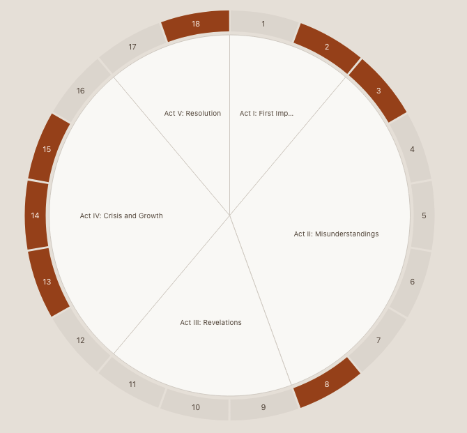
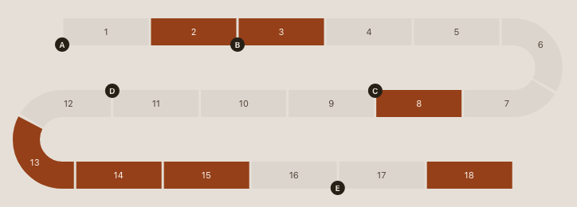

📝 SceneSetter
What is SceneSetter?
SceneSetter is a card-based visual story organizer built for writers of all kinds — novelists, screenwriters, playwrights, game designers, and anyone who needs to structure a narrative. It helps you organize your characters, locations, themes, and scenes so you can focus on telling your best story.
Everything runs in your browser. No account needed, no data sent to any server. Your stories stay yours.
Scene Board
Your scenes are displayed as cards on a visual board. Drag and drop to reorder, organize into sections (acts, chapters, parts), and see your entire story structure at a glance.
 Click to enlarge
Click to enlarge
Character & Element Library
Build a library of characters, locations, themes, and miscellaneous items. Attach them to scenes to track who appears where, which locations are used, and how themes flow through your story. Assign one or more POV names per scene too — handy if your "scenes" are really chapters with a narrator.

Search & Analysis
Search for characters, locations, themes, and items across your entire story. Instantly see which scenes contain your chosen elements, identify where characters appear and disappear, spot narrative gaps, detect over-crowded scenes, and analyze the flow and pacing of character involvement. Perfect for tracking ensemble casts, theme consistency, and location usage across your narrative.
 Click to enlarge
Click to enlarge
Sections & Organization
Group scenes into sections — acts, chapters, parts, or whatever structure fits your story. Use color-coded headers to visually separate your narrative beats.

Scene Flow Chart
See your whole story as one continuous ribbon of scenes — winding into a snake or wrapped into a circle — so you can spot pacing, gaps, and structure at a glance. Section boundaries are marked automatically, and clicking a character, POV name, or searching highlights matching scenes right in the chart, just like on the board. Click any scene to jump back to its card. Optionally size each scene's segment by its word count instead of splitting evenly, to spot unusually long or short scenes at a glance.


Reports
Generate a variety of printable reports to review your story from different angles. See which characters appear in which scenes, track location usage, analyze themes across acts, check POV balance across an ensemble, and more. Each report gives you a new perspective on your narrative structure.


SceneSetter saves everything locally — right in this browser, on this device. Just close the tab and come back anytime; your projects will still be here, no import needed. There's no cloud account, so nothing syncs to another browser or computer — and since this data only exists in this browser's storage, clearing your cache or a browser issue could wipe it too. That's why backing up still matters:
- Export regularly. Each export is a timestamped JSON file, saved wherever your browser puts downloads — your backup and your safety net.
- Import to recover lost work, roll back to an earlier version, or move a project to a different browser or computer.
- No fear of mix-ups — SceneSetter checks the timestamp on every import and warns you before letting an older file overwrite newer work.